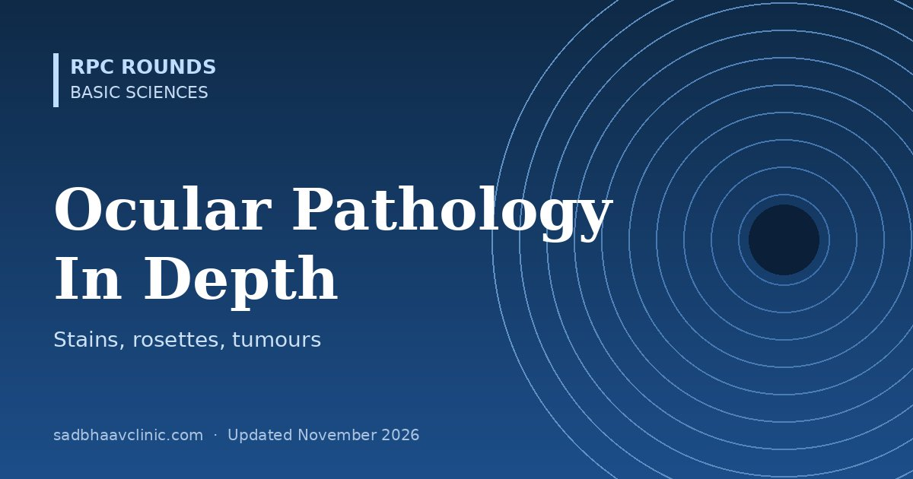

Last updated: November 2026
Ocular pathology links what we see at the slit lamp to what happens in the tissue. This in-depth guide covers specimen handling, the stains every resident should know, and the classic histology of each part of the eye, including the tumours that examiners love.
| Stain | Shows | Ocular use |
|---|---|---|
| Haematoxylin and eosin | Nuclei blue, cytoplasm pink | Routine |
| Periodic acid-Schiff (PAS) | Basement membranes, glycogen, fungal walls | Descemet membrane, lens capsule, fungi, Acanthamoeba cysts |
| Gomori methenamine silver (GMS) | Fungi (black) | Fungal keratitis, mucormycosis |
| Gram | Bacteria | Keratitis, endophthalmitis |
| Ziehl-Neelsen (modified for Nocardia) | Acid-fast bacilli | TB, atypical mycobacteria, Nocardia |
| Masson trichrome | Hyaline (red), collagen (blue) | Granular dystrophy |
| Alcian blue, colloidal iron | Glycosaminoglycans | Macular dystrophy |
| Congo red | Amyloid: apple-green birefringence under polarised light | Lattice dystrophy, conjunctival amyloid |
| Oil red O, Sudan black (fresh tissue) | Lipid | Sebaceous gland carcinoma |
| Perls Prussian blue | Iron | Siderosis, Fleischer ring, Hudson-Stähli line |
| Von Kossa, alizarin red | Calcium | Band keratopathy, phthisis |
| Fontana-Masson | Melanin | Pigmented tumours |
Memory aid for dystrophy stains: "Marilyn Monroe Always Gets Her Man in LA City": Macular – Mucopolysaccharide – Alcian blue; Granular – Hyaline – Masson trichrome; Lattice – Amyloid – Congo red.
| Marker | Positive in |
|---|---|
| S-100, HMB-45, Melan-A, SOX10 | Melanoma (S-100 also in nerve sheath tumours) |
| Cytokeratins (AE1/AE3), EMA | Carcinomas; EMA and adipophilin in sebaceous carcinoma |
| BerEP4 | Basal cell carcinoma (negative in sebaceous carcinoma) |
| CD20, CD79a; kappa/lambda restriction | B-cell lymphoma |
| Synaptophysin, neuron-specific enolase | Retinoblastoma and neuroendocrine tumours |
| BAP1 (loss) | High-risk uveal melanoma |
| Ki-67 | Proliferation index |
| Pattern | Histology | Examples |
|---|---|---|
| Acute suppurative | Neutrophils, abscess, necrosis | Bacterial keratitis, endophthalmitis |
| Chronic non-granulomatous | Lymphocytes, plasma cells, Russell bodies | Chronic anterior uveitis, chronic conjunctivitis |
| Granulomatous, diffuse | Sheets of epithelioid and giant cells | Sympathetic ophthalmia (choriocapillaris spared), VKH (choriocapillaris involved) |
| Granulomatous, discrete | Non-caseating tubercles | Sarcoidosis |
| Granulomatous, zonal | Concentric layers around a nidus | Phacoantigenic uveitis around lens material |
| Condition | Histology |
|---|---|
| Keratoconus | Central stromal thinning, breaks in Bowman layer, Fleischer ring (iron in basal epithelium), Vogt striae; acute hydrops from Descemet breaks |
| Fuchs endothelial dystrophy | Guttae (excrescences of abnormal Descemet), thickened Descemet, endothelial loss, stromal and epithelial oedema (bullae) |
| Band keratopathy | Calcium at the level of Bowman layer |
| Pterygium and pinguecula | Elastotic (actinic) degeneration of conjunctival collagen; pterygium invades and destroys Bowman layer |
| Follicle vs papilla | Follicle: lymphoid germinal centre with vessels around it (viral, chlamydial, drug). Papilla: vascular core with surrounding inflammatory cells (allergic, bacterial, lens wear) |
| Ocular surface squamous neoplasia | Dysplasia from partial thickness (CIN) to full thickness (carcinoma in situ), then invasion through the basement membrane (squamous cell carcinoma) |
| Change | Histology |
|---|---|
| Nuclear cataract | Homogeneous, brown nucleus (urochrome pigment, protein cross-linking) |
| Cortical cataract | Morgagnian globules from degenerating fibres |
| Posterior subcapsular cataract | Wedl (bladder) cells: swollen, posteriorly migrated epithelial cells |
| PCO | Elschnig pearls (regenerative) and fibrous metaplasia of lens epithelium |
| Pseudoexfoliation | Fibrillar extracellular material on the capsule, zonules and ciliary epithelium |
| True exfoliation | Splitting of the anterior capsule (glassblowers, heat exposure) |
| Condition | Histology |
|---|---|
| Diabetic retinopathy | Pericyte loss, basement membrane thickening, microaneurysms, capillary non-perfusion, intraretinal microvascular abnormalities, new vessels on the inner surface |
| Retinal artery occlusion | Ischaemic necrosis of the inner retina (inner two-thirds) with a preserved outer retina; the cherry-red spot is the intact choroid seen through the thin foveola surrounded by opaque, swollen inner retina |
| Cotton wool spots | Cytoid bodies: swollen axon ends in the nerve fibre layer from blocked axoplasmic flow |
| Hard exudates | Lipid and protein in the outer plexiform layer |
| Age-related macular degeneration | Drusen (between RPE basement membrane and Bruch inner collagenous layer), basal laminar and basal linear deposits, RPE atrophy, choroidal neovascular membranes |
| Retinal detachment | Photoreceptor outer segment degeneration within hours to days; RPE proliferation and PVR membranes later |
| Retinitis pigmentosa | Loss of photoreceptors, RPE cells migrating around vessels (bone spicules), gliosis of the disc |
| Tumour | Histology and prognostic points |
|---|---|
| Retinoblastoma | Small round blue cells, necrosis, calcification. Flexner-Wintersteiner rosettes (true lumen; most specific), Homer Wright rosettes (no lumen; also neuroblastoma), fleurettes (photoreceptor differentiation; retinocytoma). High-risk features: optic nerve invasion beyond the lamina cribrosa, massive choroidal invasion (3 mm or more), scleral or anterior segment invasion |
| Uveal melanoma | Modified Callender: spindle (best prognosis), epithelioid (worst), mixed. Poor prognosis: large size, ciliary body involvement, extrascleral extension, epithelioid cells, monosomy 3, BAP1 loss, class 2 gene expression profile |
| Conjunctival melanoma | From primary acquired melanosis with atypia, naevi or de novo; spreads to regional nodes |
| Basal cell carcinoma | Basaloid nests with peripheral palisading and retraction clefts; morphoeic (sclerosing) type infiltrates widely and recurs |
| Sebaceous gland carcinoma | Lipid-rich vacuolated cells, pagetoid spread into conjunctival and skin epithelium; adipophilin and EMA positive |
| Squamous cell carcinoma | Keratin pearls, intercellular bridges, invasion through the basement membrane |
| Ocular adnexal lymphoma | Usually extranodal marginal zone (MALT) B-cell lymphoma: salmon-pink conjunctival lesion. Vitreoretinal lymphoma is usually diffuse large B-cell (vitreous IL-10 to IL-6 ratio above 1) |
| Orbital tumours | Cavernous venous malformation ("cavernous haemangioma", the commonest benign adult orbital mass); embryonal rhabdomyosarcoma (commonest childhood primary orbital malignancy; cross-striations, desmin and myogenin positive); optic nerve glioma (pilocytic astrocytoma, Rosenthal fibres, NF1); optic nerve sheath meningioma (psammoma bodies) |
| Lacrimal gland | Pleomorphic adenoma (benign mixed tumour; excise intact without biopsy to avoid recurrence and malignant change); adenoid cystic carcinoma (Swiss-cheese pattern, perineural invasion, poor prognosis) |
Where residents slip
Related: Corneal Dystrophies Made Easy: Layers, Stains and Genes, Ocular Tumours: Eyelid, Conjunctiva, Uvea and Orbit, Eyelid Tumours: BCC, SCC, Sebaceous Gland Carcinoma and Melanoma, Revise ophthalmology checklist.
📘 Want more exam-ready material? See Most Commons in Ophthalmology on Kindle, or browse all my books.
Looking for an eye specialist in Ahmedabad? Learn about our Eye Department or book a consultation with Dr. Dhaval Patel.